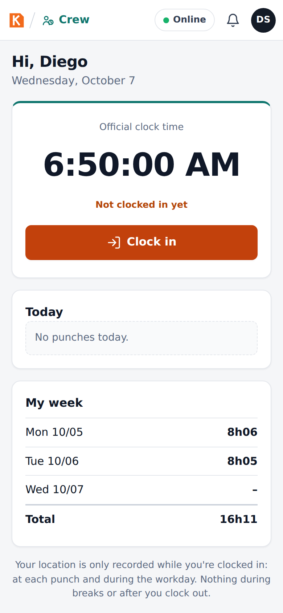
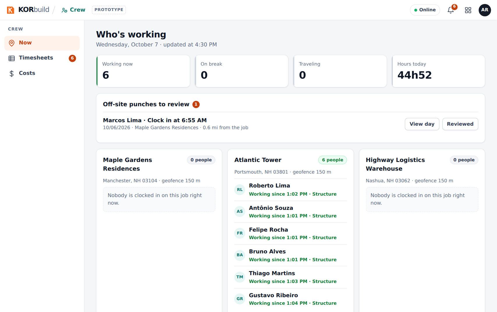

Crew is the crew time clock. It records who worked, where, on which cost code and for how long, turns that into weekly timesheets approved for payroll, and into labor cost per job: budget × actual × forecast to completion.
Three questions it answers
- Who worked, where and how much? Punches with GPS, the job's geofence and an optional crew photo.
- How much do I pay? The weekly timesheet, with overtime calculated by the company's work rule, approved and exported to payroll as a CSV file.
- How much is this job costing, and will it finish within budget? Labor cost by job and cost code, with the forecast to completion — early enough to act.
The same punches fill the crew of the Daily report, so the field enters the crew once.
Who uses it
| Who | Where | What they do |
|---|---|---|
| Worker | Phone | My time clock: clocks in and out on their own phone, sees their punches and hours of the week (never dollar amounts). |
| Foreman | Phone | Crew time clock: clocks in the whole crew from one phone; Hours: the crew's week with alerts. |
| Office (admin, project manager) | Computer | Now (who is working where), Timesheets (approve, return, edit, export), Costs (budget, actual, forecast). |
Employees, hourly rates, labor burden and work rules are set up in Settings, because every module uses them. Crew only reads them.
The main screens
| Screen | Who sees it | What it shows |
|---|---|---|
| My time clock | Worker | The clock, today's status, one big button with what fits now (clock in, start break, switch job, clock out), today's punches and the week. |
| Crew time clock | Foreman | The crew with each person's status; select people and use Clock in · Break · Back from break · Switch job · Arrived · Clock out. |
| Hours | Foreman | The crew's hours of the week by person and day, with alerts. |
| Now | Office | Who is working on each job, on break or traveling, and the off-site punches to review. |
| Timesheets | Office | Everyone's week: hours per day, total, overtime, cost and status; approve, return and export. |
| Employee week | Office | One person's days, with Edit (a new punch with a reason) and the Day map. |
| Day map | Office | The day on a street map: punches, the job's geofence, the path, Play back and the timeline. |
| Costs | Office (with cost permission) | By job (budget, actual, forecast, chart), by month and by week. |


Key ideas
| Term | Meaning |
|---|---|
| Punch | One time clock record: clock in, break start, break end, switch job, arrived, clock out. A punch is never edited or deleted; a correction is a new punch, marked as an edit, with who and why. |
| Geofence | A circle around the job (150 m by default, set per job). A punch outside it is accepted but flagged for the office to review. |
| Cost code | The service the hour was spent on (foundation, structure, masonry…). Every hour belongs to a job and a cost code. |
| Travel | Moving from one job to another during the workday. It is paid time. |
| Timesheet | One person's week, Monday to Sunday: total, regular and overtime hours, cost and status. |
| Labor burden | What the company pays on top of wages (FICA, unemployment, workers' comp, benefits), as a % of payroll. |
| Burdened cost | Hourly rate × (1 + labor burden): what an hour really costs the company. |
| Estimate at completion | Where the job's labor cost is heading, from what was spent and how much of the job is built. |
Connected to the other modules
- Daily: the report's crew can be filled from who clocked in on the job that day.
- Jobs (Settings › Jobs): the job's location and geofence radius come from the job setup. Only jobs in progress appear in the time clock.
- Settings: employees and hourly rates (with effective dates), labor burden, work rules (overtime and breaks).